☦ Back to Menu

The Roman Catholic Church uses the Terço and Rosary as prayer instruments, involving the repetition of specific prayers while counting beads. In the Orthodox Church, there is a similar practice called the Prayer Rope, known as Komboskini (Greek) and Chotki (Russian).
Below is an explanation of the Orthodox equivalents to the Catholic Terço and Rosary.
Description: A string of knots or beads, usually made of wool or similar material, used as a counting tool during prayer.
Usage: Orthodox Christians use the rope to count repetitions of the Jesus Prayer:
"Lord Jesus Christ, Son of God, have mercy on me, a sinner."
Each knot or bead represents one repetition of the prayer.
Purpose: It aids concentration and meditation, helping maintain focus and cultivate continuous prayer.
Description: The central prayer in Orthodox spirituality, seen as a constant invocation of God's presence.
Practice: The prayer is repeated continually using the prayer rope, fostering purification of the mind and heart and a deeper union with God.
Catholic Rosary: Typically composed of 59 beads and divided into mysteries reflecting events in the lives of Jesus and Mary. It includes prayers such as the Our Father, Hail Mary, and Glory Be.
Komboskini / Chotki: Usually made with 33, 50, or 100 knots, without divisions into mysteries. It focuses on the continuous repetition of the Jesus Prayer.
Both serve as tools for continuous prayer and spiritual meditation, helping practitioners maintain discipline and a steady rhythm of devotion.
Origin: The use of the prayer rope is deeply rooted in Hesychast spirituality, which emphasizes contemplative prayer and inner stillness.
Objective: To achieve inner peace and awareness of God's presence through continuous prayer.
☦ Back to Menu